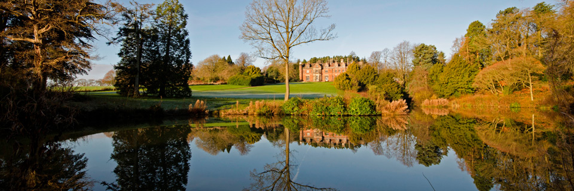
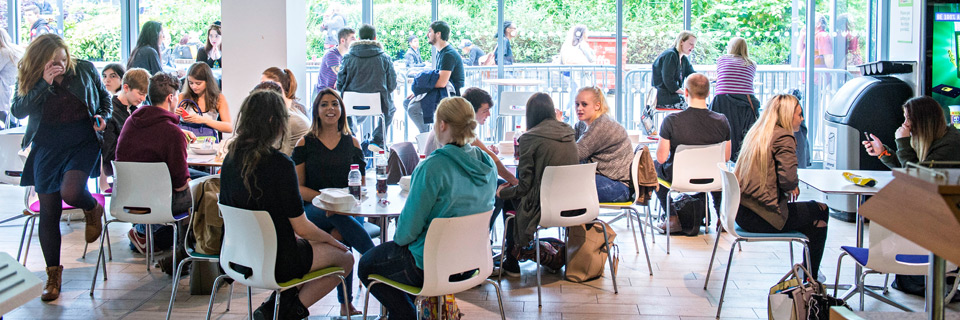
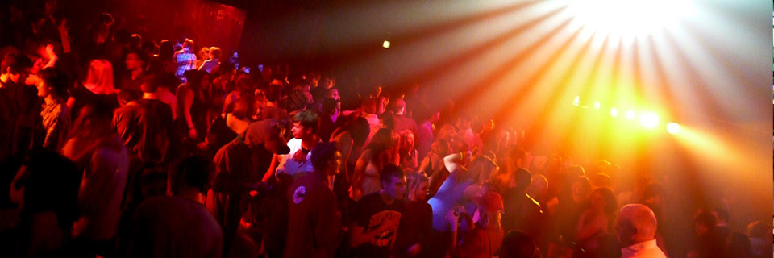

Keele Woods

With the sun shining and the birds singing, there are fewer places better to relax than around the eight lakes of Keele. Keele woods is planted predominantly with Pedunculate Oak, with scattered Beech, Yew and Sycamore. Bluebells form an impressive carpet in spring.
The Library
Relax to the familiar sounds of Group Study in our 24 hour library. Founded in 1962, our award winning library is a hive of student activity and full of memories.
Munch

Need a morning coffee to wake you up or having a catchup with a friend? Settle in for a scrumptious meal and a refreshing coffee from Munch.
The Squirrel

Relax in chilled surroundings with your mates in The Scruffy Squirrel. Have a game of pool, a bite to eat or a quick drink.